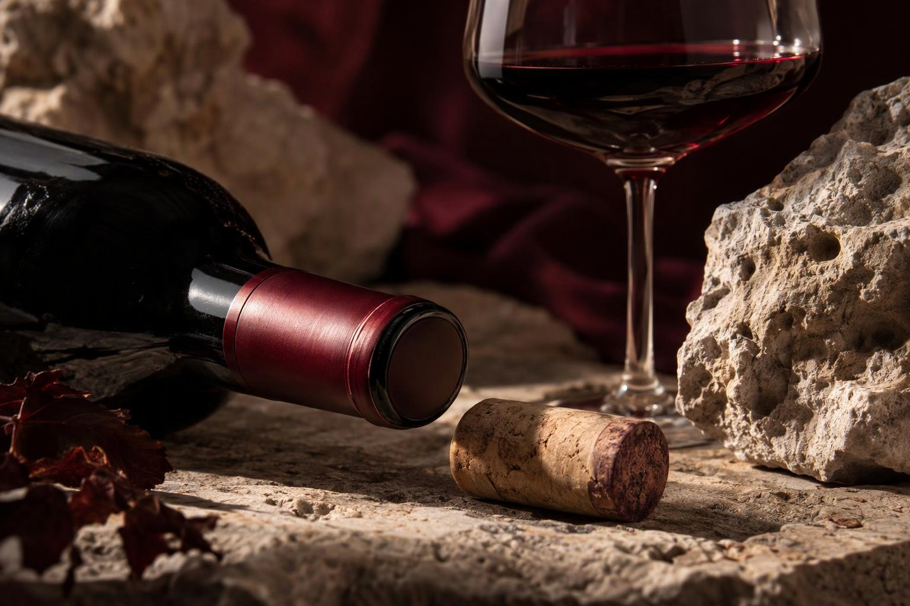

Produzioni di famiglia
Il carattere del Carso, in bottiglia.
Annate, disponibilità e prezzi possono variare. Contattaci per ricevere il listino aggiornato.

Espressioni diverse di una stessa terra.
Produzioni di famiglia
Annate, disponibilità e prezzi possono variare. Contattaci per ricevere il listino aggiornato.